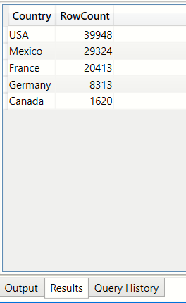

Overview
In this article I have presented some of the frequent DAX queries I was encountering in my day to day work. The objective of this article is to help users with DAX through an example based approach. I found that it is easier to comprehend the nuances of the DAX language if it supported by simple examples. Note - it is not strictly neccessary that the results have to be obtained via DAX only. If the data model is good then Power BI visuals can often meet the requirements. In this article I have covered the following DAX expressions:
- EVALUATE
- DEFINE
- TABLE
- COLUMN
- MEASURE
- MIN
- MAX
- TOPN
- SELECTCOLUMNS
- SUM
- UPPER
- DISTINCT
- ORDERBY
- UNION
- ROW
- COUNTBLANK
- COUNTROWS
- FILTER
- IF
- ISBLANK
- SUMMARIZE
- SUMMARIZECOLUMNS
- GROUPBY
- CURRENTGROUP
- COUNTX
- SUMX
- MINX
- MAXX
- SUMX
- CURRENTGROUP
Sample data
The DAX expressions in this article are written around the MS Access sample database downloadable from Microsoft Learning. A copy of the same can also be downloaded from my Github repo here. A copy of the Power BI report which references this MS Access database can be downloaded from my Github repo here.
Database schema

Data
To get a feel of what the data looks like I have presented the top 5 rows from each of the tables in this database

DAX studio primer
How to use DAX studio?
DAX studio from Microsoft is a very handy tool if you want to experiment with DAX queries outside of Power BI. I have listed some informative videos below. DAX Studio runs independently of Power BI, however it expects a running instance of Power BI to establish a connection.
- DAX studio tutorial: What should I use it for, tool overview
- Why you should use DAX Studio with Power BI
- Computing a measure in DAX Studio

How to execute Table expressions?
DAX studio expects any table expression to be encapsulated inside a EVALUATE() block.
In the following example, we are inspecting the first 20 rows of the bi_salesFact table.
EVALUATE
(
TOPN(20, bi_salesFact)
)

How to execute Scalar expressions?
To execute any expression that returns a scalar value (i.e. not a table) encapsulate the expression
in a EVALUATE {} block
EVALUATE
{
MAX(bi_salesFact[Date])
}
EVALUATE
{
MIN(bi_salesFact[Date])
}

How to create a measure (MEASURE,SUM)?
In this example we are calculating the total sales per manufacturer.
When using DAX studio, the DEFINE keyword should be used to create a new MEASURE and
this declaration should precede the EVALUATE() keyword.
DEFINE MEASURE bi_manufacturer[TotalUnits]= SUM(bi_salesFact[Units]) EVALUATE ( SELECTCOLUMNS ( bi_manufacturer, "id",bi_manufacturer[ManufacturerID], "name",bi_manufacturer[Manufacturer], "TotalUnits",bi_manufacturer[TotalUnits] ) )

How to create a calculated column(UPPER,COLUMN)?
In the following example we are creating a new column which converts the manufacturer name to upper case
DEFINE COLUMN bi_manufacturer[ManufacturerUpper]= UPPER(bi_manufacturer[Manufacturer]) EVALUATE ( bi_manufacturer )

List of unique Product Segments (DISTINCT, ORDER BY)
In this example we are displaying an unique list of product segments.
EVALUATE
(
DISTINCT( bi_product[Segment])
)

Use the ORDER BY tag if neccessary
EVALUATE
(
DISTINCT( bi_product[Segment])
) ORDER BY bi_product[Segment] DESC
Distinct list of financial years from the Sales table (DISTINCT)
In this query we are creating a calculated column to get the year component from the sales transaction date
and then using the DISTINCT on the year column
DEFINE
COLUMN bi_salesFact[Year] = year(bi_salesFact[Date])
EVALUATE
(
DISTINCT( bi_salesFact[Year] )
)
Distinct list of financial years from the Sales table(VALUES)
The VALUES expression has a similar behaviour to DISTINCT
DEFINE COLUMN bi_salesFact[Year] = year(bi_salesFact[Date]) EVALUATE ( VALUES( bi_salesFact[Year] ) )

Count of rows from all the tables (ROW,UNION)
This helps towards the answering the question - "How much data does my dataset hold?"
EVALUATE
(
UNION
(
ROW("Table","bi_date","Rows",{COUNTROWS(bi_date)}),
ROW("Table","bi_geo","Rows",{COUNTROWS(bi_geo)}),
ROW("Table","bi_manufacturer","Rows",{COUNTROWS(bi_manufacturer)}),
ROW("Table","bi_product","Rows",{COUNTROWS(bi_product)}),
ROW("Table","bi_salesFact","Rows",{COUNTROWS(bi_salesFact)}),
ROW("Table","bi_sentiment","Rows",{COUNTROWS(bi_sentiment)})
)
)

In the following example we have added an ORDER BY clause
EVALUATE
(
UNION
(
ROW("Table","bi_date","Rows",{COUNTROWS(bi_date)}),
ROW("Table","bi_geo","Rows",{COUNTROWS(bi_geo)}),
ROW("Table","bi_manufacturer","Rows",{COUNTROWS(bi_manufacturer)}),
ROW("Table","bi_product","Rows",{COUNTROWS(bi_product)}),
ROW("Table","bi_salesFact","Rows",{COUNTROWS(bi_salesFact)}),
ROW("Table","bi_sentiment","Rows",{COUNTROWS(bi_sentiment)})
)
) ORDER BY [Rows] DESC

Display N rows from a table (TOPN)
Use this when you want to do a quick visual inspection of a table.
EVALUATE
(
TOPN (5,bi_salesFact)
)
The TOPN expression can also order the results
EVALUATE ( TOPN ( 5, bi_salesFact, bi_salesFact[Units], DESC ) )
Find rows with blank column values (COUNTBLANK, FILTER,COUNTROWS)
This answers the question. How many rows in the bi_geo table do not have a Region value?
EVALUATE
{
COUNTBLANK(bi_geo[Region])
}
The same result can also be achieved by using COUNTROWS on a FILTER expression
EVALUATE
{
COUNTROWS
(
FILTER(bi_geo, ISBLANK(bi_geo[Region]))
)
}
In the following example we are counting blank regions for a specific country
EVALUATE
{
COUNTROWS
(
FILTER(bi_geo, ISBLANK(bi_geo[Region]) && bi_geo[Country]="France")
)
}
In the following example we are displaying all rows where Region is non-blank
EVALUATE
(
FILTER (
bi_geo,
ISBLANK ( bi_geo[Region] )=FALSE
)
)
Add a calculated column to return 1 if region is blank otherwise 0 (ISBLANK, IF)
In this example we are creating a new calculated column on the table bi_region and using the IF
expression to return either 1 or 0
EVALUATE
{
COUNTROWS
(
FILTER(bi_geo, ISBLANK(bi_geo[Region]))
)
}
DEFINE
COLUMN bi_geo[IsBlank] = IF( ISBLANK(bi_geo[Region]) ,1,0)
EVALUATE
(
bi_geo
)
What is the distribution of values in the Country column of the bi_geo table? (SUMMARIZE)
In this example we want to know the distinct list of countries and the total number of rows per country
EVALUATE ( SUMMARIZE( bi_geo, bi_geo[Country], "RowCount",COUNT(bi_geo[Country]) ) ) order by [RowCount] desc
What is the distribution of values in the Region columm of the bi_geo table? (SUMMARIZE,SUMMARIZECOLUMNS,GROUPBY)
This verifies that total rows(99618)=total non blanks(18929+14512+6507) + total blanks(59670).
Note the presence of the blank row and the value of the Count is blank too. This is because by default the
SUMMARIZE ,SUMMARIZECOLUMNS and GROUPBY functions ignore blanks.
EVALUATE ( SUMMARIZE(bi_geo,bi_geo[Region], "Count", COUNT(bi_geo[Region]) ) ) ORDER BY [Count] DESCExample using SUMMARIZECOLUMNS
EVALUATE ( SUMMARIZECOLUMNS(bi_geo[Region], "Count", COUNT(bi_geo[Region]) ) )Example using GROUPBY
EVALUATE ( GROUPBY( bi_geo,bi_geo[Region], "Count", COUNTX(CURRENTGROUP() ,bi_geo[Region]) ) )

What is the distribution of values in the Region columm of the bi_geo table taking into account the blank values? (GROUPBY, SELECTEDGROUP(),IF, ISBLANK)
Approach 1
In this approach we are using GROUPBY and using ISBLANK and IF to convert the blank values into a non-blank value.
Take note that the specified replacement value in the IF only helps in GROUPBY counting correctly
EVALUATE ( GROUPBY ( bi_geo, bi_geo[Region], "Count", COUNTX ( CURRENTGROUP(), IF ( ISBLANK([Region]), "some non blank value", [Region] ) ) ) )
Approach 2
In this approach we are first creating a calculated table with a new column NewRegion where the blank value has been replaced by the string 'blank'
and then using SUMMARIZECOLUMNS to do the grouping
DEFINE TABLE allRegions=CALCULATETABLE( SELECTCOLUMNS ( bi_geo, "NewRegion", IF(ISBLANK(bi_geo[Region]),"blank", bi_geo[Region]) ) ) EVALUATE ( SUMMARIZECOLUMNS(allRegions[NewRegion],"Count",COUNT(allRegions[NewRegion])) )
Approach 3
This is similar to the previous approach where we first created a calculated table using CALCULATETABLE and replaced the blank values with the string 'blank'.
We are now using GROUPBY to do the grouping on the calculated table
DEFINE TABLE allRegions=CALCULATETABLE( SELECTCOLUMNS ( bi_geo, "NewRegion", IF(ISBLANK(bi_geo[Region]),"blank", bi_geo[Region]) ) ) EVALUATE ( GROUPBY ( allRegions, allRegions[NewRegion], "CountUsingGroupBy", COUNTX( CURRENTGROUP(), allRegions[NewRegion]) ) )
Approach 4
We are expanding on the previous approach of using GROUPBY and CALCULATETABLE and grouping by Country and Region
DEFINE
TABLE allRegions =
CALCULATETABLE (
SELECTCOLUMNS (
bi_geo,
"Country", bi_geo[Country],
"NewRegion",
IF (
ISBLANK ( bi_geo[Region] ),
"blank",
bi_geo[Region]
)
)
)
EVALUATE
(
GROUPBY (
allRegions,
allRegions[Country],
allRegions[NewRegion],
"CountUsingGroupBy",
COUNTX (
CURRENTGROUP (),
allRegions[NewRegion]
)
)
)
Approach 5
We could simply use GROUPBY and IF, ISBLANK to replace blank values with some string.
Attention! COUNTX will refuse to count rows with blank values and therefore the IF clause is very important
EVALUATE ( GROUPBY( bi_geo, bi_geo[Country],bi_geo[Region], "Count", COUNTX ( CURRENTGROUP(), IF(ISBLANK ( bi_geo[Region] ),"blank",bi_geo[Region]) ) ) )
Are there any duplicates in the 'zip' column of bi_Geo table? (SUMMARIZE,COUNT)
This will help us establish the cardinality of a foreign key relationship with the zip column.
Looking at the results we can conclude that there are indeed duplicates and hence a 1-many relationship between bi_Geo and bi_SalesFact is ruled out.
EVALUATE ( SUMMARIZE(bi_geo,bi_geo[Zip], "Count", COUNT(bi_geo[Zip]) ) ) ORDER BY [Count] DESC
The above can also be achieved by using SUMMARIZECOLUMNS
EVALUATE ( SUMMARIZECOLUMNS ( bi_geo[Zip], "CountOfOccurences",COUNT(bi_geo[Zip]) ) ) ORDER BY [CountOfOccurences] DESC

What is the highest number of times a single 'zip' code has been duplicated? (SUMMARIZECOLUMNS)
In this example MAXX and SUMMARIZECOLUMNS are used together to get the group with the highest count
EVALUATE
{
MAXX
(
SUMMARIZECOLUMNS
(
bi_geo[Zip],
"CountOfOccurences",COUNT(bi_geo[Zip])
),
[CountOfOccurences]
)
}

How many values in the 'zip' column are not duplicated? (SUMMARIZECOLUMNS, FILTER, COUNT)
We will arrive at this result in 2 steps. We will first SUMMARIZE the row counts per group and then FILTER on this result
to give us ony those rows where the row count is 1
Step 1: Use FILTER and SUMMARIZECOLUMNS to produce a flat table of all zip codes which are used only once
EVALUATE ( FILTER ( SUMMARIZECOLUMNS ( bi_geo[Zip], "CountOfOccurences",COUNT(bi_geo[Zip]) ), [CountOfOccurences]=1 ) )
Step 2:Use COUNTROWS on the table produced in the previous step to get a scalar value
EVALUATE
{
COUNTROWS
(
FILTER
(
SUMMARIZECOLUMNS
(
bi_geo[Zip],
"CountOfOccurences",COUNT(bi_geo[Zip])
),
[CountOfOccurences]=1
)
)
}
Total units sold and total revenue earned per Product Segment (SUMMARIZE, SUM, ROUND)
EVALUATE
(
SUMMARIZE(
bi_salesFact, bi_product[Segment] ,
"Total Revenue",ROUND(SUM(bi_salesFact[Revenue]),2) ,
"Total units", SUM(bi_salesFact[Units]) )
)
ORDER BY bi_product[Segment] DESC
Min,Max,Avg sales per Product Segment (GROUPBY, SUMX,MINX, MAXX, AVERAGEX)
In this example we are calculating the statistics of sales in bi_SalesFact table on a per segment basis
EVALUATE ( GROUPBY ( bi_salesFact, bi_product[Segment], "Total units", (SUMX(CURRENTGROUP(),bi_salesFact[Units])), "Max units", MAXX(CURRENTGROUP(),bi_salesFact[Units]), "Average units", AVERAGEX(CURRENTGROUP(),bi_salesFact[Units]), "Min units", MINX(CURRENTGROUP(),bi_salesFact[Units]), "Total revenue", (SUMX(CURRENTGROUP(),bi_salesFact[Revenue])), "Max revenue", MAXX(CURRENTGROUP(),bi_salesFact[Revenue]), "Average revenue", AVERAGEX(CURRENTGROUP(),bi_salesFact[Revenue]), "Min revenue", MINX(CURRENTGROUP(),bi_salesFact[Revenue]) ) ) order by [segment] DESC
Total units sold and revenue earned per Manufacturer (SELECTCOLUMNS)
EVALUATE
(
SELECTCOLUMNS
(
bi_manufacturer,
"Manufacturer name", bi_manufacturer[Manufacturer] ,
"SumUnits" , CALCULATE(SUM( bi_salesFact[Units])) ,
"SumRevenue",CALCULATE(SUM( bi_salesFact[Revenue]))
)
)

Total units sold and revenue earned per Manufacturer (SUMMARIZE)
We are using SUMMARIZE to produce the same result
EVALUATE ( SUMMARIZE( bi_manufacturer, bi_manufacturer[Manufacturer], "SumUnits" , CALCULATE(SUM( bi_salesFact[Units])), "SumRevenue",CALCULATE(SUM( bi_salesFact[Revenue])) ) ) ORDER BY [SumUnits] DESC
Sort the manufacturers on Total units sold (SELECTCOLUMNS, ORDER BY)
EVALUATE
(
SELECTCOLUMNS
(
bi_manufacturer,
"Manufacturer name", bi_manufacturer[Manufacturer] ,
"SumUnits" , CALCULATE(SUM( bi_salesFact[Units])) ,
"SumRevenue",CALCULATE(SUM( bi_salesFact[Revenue]))
)
) ORDER BY [SumUnits] DESC

The above can also be achieved by using SUMMARIZE
EVALUATE
(
SUMMARIZE(
bi_manufacturer, bi_manufacturer[Manufacturer],
"SumUnits" , CALCULATE(SUM( bi_salesFact[Units])),
"SumRevenue",CALCULATE(SUM( bi_salesFact[Revenue]))
)
) ORDER BY [SumUnits] DESC
Total units sold and revenue earned per Manufacturer per Segment
DEFINE
TABLE manuf_segment_totalunits = GROUPBY( bi_salesFact, bi_product[Manufacturer], bi_product[Segment] , "Total units",SUMX( CURRENTGROUP(), bi_salesFact[Units] ) ,"Total revenue",SUMX( CURRENTGROUP(), bi_salesFact[Revenue] ) )
EVALUATE
(
manuf_segment_totalunits
) order by [Total units] DESC
Total units sold and revenue earned per Manufacturer per Segment (renamed columns)
In this example we demonstrate how to rename the columns
DEFINE
TABLE manuf_segment_totalunits = GROUPBY( bi_salesFact, bi_product[Manufacturer], bi_product[Segment] , "total_units",SUMX( CURRENTGROUP(), bi_salesFact[Units] ) ,"total_revenue",SUMX( CURRENTGROUP(), bi_salesFact[Revenue] ) )
EVALUATE
(
SELECTCOLUMNS(
manuf_segment_totalunits ,
"Manufacturer Name",[bi_product_Manufacturer],
"Product segment",[bi_product_Segment],
"Total units",[total_units],
"Total revenue",[total_revenue]
)
) ORDER BY [Manufacturer Name]

Best selling and worst selling Product segment for every Manufacturer (SELECTEDVALUE,SUMMARIZE, MAXX, SUM, MINX)
We will attempt to answer the question - "For every manufacturer what was the best performing and worst performing product segment with regards to units sold?" To achieve this we will create 4 measures
- segment_maxunits_name Calculates the name of the product segment for a manufacturer which sold the highest number of units
-
segment_maxunits_value Calculates the total units sold by a manufacturer for the product segment calculated by the measure
segment_maxunits_name - segment_minunits_name Calculates the name of the product segment for a manufacturer which sold the least number of units
-
segment_minunits_value Calculates the total units sold by a manufacturer for the product segment calculated by the measure
segment_minunits_name
Step 1 Use the SUMMARIZE expression on the bi_salesFact and group by Segment.
Use the SELECTEDVALUE to filter the records going into SUMMARIZE so that we are dealing with sales related to the current manufacturer only.
Step 2 Create measures on the bi_manufacturer which will pick the maximum and minimum from the output of Step 1
Step 3 Create measures which use the maximum and minimum values from Step 2 to filter the results of the SUMMARIZE operation in Step 1 and
we are now left with the rows which have the segment name.
DEFINE MEASURE bi_manufacturer[segment_maxunits_value] = //Get the max units sold by a segment VAR summary= SUMMARIZE ( FILTER ( bi_salesFact, RELATED(bi_product[ManufacturerID] ) = SELECTEDVALUE(bi_manufacturer[ManufacturerID])), bi_product[Segment], "TOTAL UNITS", CALCULATE(SUM(bi_salesFact[Units])) ) VAR maxUnit=MAXX(summary,[TOTAL UNITS]) VAR x=SELECTEDVALUE(bi_product[Category]) RETURN maxUnit MEASURE bi_manufacturer[segment_maxunits_name] = //Now get the segment name which sold the max units VAR summary= SUMMARIZE ( FILTER ( bi_salesFact, RELATED(bi_product[ManufacturerID] ) = SELECTEDVALUE(bi_manufacturer[ManufacturerID])), bi_product[Segment], "TOTAL UNITS", CALCULATE(SUM(bi_salesFact[Units])) ) VAR maxUnitValue=MAXX(summary,[TOTAL UNITS]) var maxSegmentName = CALCULATE( MAXX(FILTER( summary, [TOTAL UNITS]=maxUnitValue),[Segment])) RETURN maxSegmentName MEASURE bi_manufacturer[segment_minunits_value] = //Get the min units sold by a segment VAR summary= SUMMARIZE ( FILTER ( bi_salesFact, RELATED(bi_product[ManufacturerID] ) = SELECTEDVALUE(bi_manufacturer[ManufacturerID])), bi_product[Segment], "TOTAL UNITS", CALCULATE(SUM(bi_salesFact[Units])) ) VAR minUnit=MINX(summary,[TOTAL UNITS]) RETURN minUnit MEASURE bi_manufacturer[segment_minunits_name] = //Now get the segment name which sold the min units VAR summary= SUMMARIZE ( FILTER ( bi_salesFact, RELATED(bi_product[ManufacturerID] ) = SELECTEDVALUE(bi_manufacturer[ManufacturerID])), bi_product[Segment], "TOTAL UNITS", CALCULATE(SUM(bi_salesFact[Units])) ) VAR minUnit=MINX(summary,[TOTAL UNITS]) var minSegmentName = CALCULATE( MAXX(FILTER( summary, [TOTAL UNITS]=minUnit),[Segment])) RETURN minSegmentName EVALUATE ( SELECTCOLUMNS( bi_manufacturer, "id",[ManufacturerID], "name",[Manufacturer], "max_segment_name", [segment_maxunits_name], "max_segment_units",[segment_maxunits_value], "min_segment_name", [segment_minunits_name], "min_segment_units",[segment_minunits_value] ) )